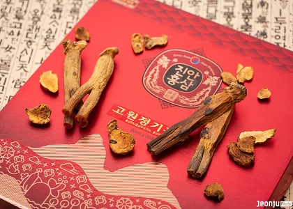
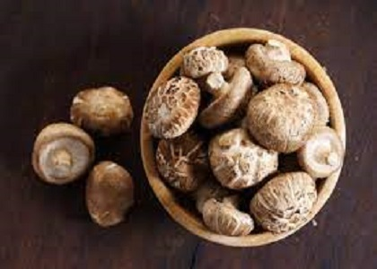

-
전라북도 진안 정천면에서 생산하는 씨없는 곶감은 자연현상과 운장산 지리적 특성 때문에 특이하게 감에 씨앗이 없고, 높은 당도를 자랑한다.
곶감은 쫄깃한 식감과 달콤한 맛과 더불어 풍부한 비타민c 함량으로 감기예방에도 좋고 가래와 기침을 억제하는 효과도 있다.
진안 정천면에는 씨없는 곶감마을이 있어 이곳을 방문하면 감 따기, 감 깎기, 곶감말리기, 감식초 만들기 등의 다양한 곶감과 관련한 체험을 할 수 있다.
-

평균해발 400m의 남한유일 고원지대에서 재배되는 진안인삼은 사포닌과 진세노사이드 성분을 다량 함유하고 있어 홍삼가공용으로는 최상급 품질을 자랑하고 있으며, 그 지리적 특성으로 2005년에 홍삼한방특구로 지정되었다.
최초로 홍삼관련 전문연구기관인 진안홍삼연구소가 설립되어 진안홍삼의 우수성 검증은 물론 재배부터 생산, 가공까지 체계적인 품질관리를 해오고 있다.
특히 2012년에 대한민국 최초 홍삼명인이 진안에서 배출되었으며,
진안군 관계자는 "진안군은 명실상부한 홍삼의 고장으로 확고히 뿌리를 내리고 있다."며 "진안홍삼의 브랜드 강화 및 기반산업 육성을 위해 공동브랜드를 적극 활용해 나갈 계획이다"라고 말했다.
-

운장산 표고버섯 수액은 지형적으로 채취하는 지대가 높고 일교차가 커서 수액의 성분과 수질이 우수하다.
천연 이온수이며, 자당 338g/18리터 함유되어 있어 피로회복에 좋고 몸속의 노폐물 제거에 탁월한 효과가 있다.
삼국시대부터 전래된 수액은 위장병, 당석증, 비뇨기질환, 신경통, 당뇨, 여성산후조리에 효능이 있다고 한다.